| Animations |
Nightshade's objects animate the way the Filmation games' do: an object's graphic -- the first byte of its 16-byte record -- chooses both the routine that runs it every turn, through UPDATES, and its sprite, through GRAPHICS, so a thing animates by changing its own graphic. The knight's legs count six walking frames, the monsters and the sparkles four, whatever vanishes counts from 12 to 15. What is Nightshade's own is the town: the knight stands in the middle of the play area and the town is drawn round him again every turn, so it moves as he walks and turns round when he turns it. (See Knight Lore's animations and Alien 8's for the rooms of the first Filmation games.)
Each animation below was made by running the game in SkoolKit's simulator when these pages were built: started from the menu with the keyboard, and put into the cell wanted by the game's own restart (the cell and facing written into the start records at START_RECORDS and his life ended, so that NEW_LIFE starts the next there); then run a turn at a time -- every record's update, the town drawn round him, the buffer copied to the screen -- with each picture read off the screen as the turn left it. So that nothing wanders into a picture about something else, the records monsters, finds and bonuses come into were kept busy with an empty graphic that does nothing, unless the animation is about them; where more was staged, the animation says what. Nightshade's main loop has no wait: interrupts are off and a turn lasts as long as its work, about 60 to 90 ms in the town. Each picture is shown for as long as it stayed on the screen -- until the next turn's was copied over it -- counted in T-states at 3.5MHz; the simulator has none of a real Spectrum's memory contention, so the game runs a little faster here than on the machine. A frame drawn the same as the one before is merged into it. The menu and the screens of the ending have no turns: they were read once a television frame (69,888 T-states), FLASH shown as the ULA shows it.
The monsters, the creature and the villains are shown alone, not in the town. In runs made the same way, the thing's record was read at the end of every turn -- its graphic, and its flags, whose bit 6 mirrors it -- and that graphic drawn by itself by the game's own drawing code: DRAW_SPRITE_AT, an entry point of DRAW_SPRITE, run from a spare record holding the graphic and those flags (so that TURN_SPRITE turns a mirrored one round first, as in play), once over a buffer of zeros and once over ones, which tells the image from the mask, as the Sprites page draws them. Every picture was checked against the sprite's bytes as the listing reads them, turned round where mirrored. White is the image, black the mask where the image is clear, and the rest is transparent; they are shown on the Sprites page's blue-grey, since this page's own dark would swallow the black. Each picture stands on its bottom left corner, the corner the game draws a sprite from, and is shown for as long as its turn stayed on the screen, as in the scenes. Where the way a thing faces changes its picture, a table has a GIF for each facing, or names the facing it looks the same as.
Under each: the graphics shown with their sprites, what was measured in the run beside what the code says it should be, and the frames of the picture with what they show and how long each lasts -- for a table, under each GIF, its graphics in the order it shows them and its turns.
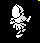
The legs step through their six frames one a turn, the low three bits of the graphic counting 0 to 5 (WALK_ON), 16-21 from behind and 24-29 from the front, his face showing (bit 3 of the graphic); the top copies them each turn, 32-37 or 40-45 (UPDATE_TOP), and stands on them. Facing +U or -V he comes towards the viewer. Which view, and whether it is mirrored, comes from the facing and the way the town is turned (FACING_LOOKS). His speed goes halfway to the top speed of 10 each turn, rounded down to an even number, so it settles at 8. He stays in the middle of the play area and the town moves under him. Here the open cell (24,23) of the town, walk held from standing; the six turns at full speed, over and over. Facing +V he is seen from behind, mirrored.
Graphics and their sprites: 16 (SPRITE16), 32 (SPRITE32).
His speed over the first five turns with walk held from standing: 4, 6, 8, 8, 8, as the code has it. The distance moved a turn once it has settled, along the one axis he faces: 8, as the code has it. The walking frame, one a turn: 0, 1, 2, 3, 4, 5, as the code has it. A turn took 78-93 ms here.
In the picture: 16+32m (80 ms); 17+33m (90 ms); 18+34m (90 ms); 19+35m (90 ms); 20+36m (90 ms); 21+37m (90 ms). 6 frames, 0.5 s in all.
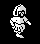
As above, facing +U: seen from the front.
Graphics and their sprites: 24 (SPRITE24), 40 (SPRITE40).
His speed over the first five turns with walk held from standing: 4, 6, 8, 8, 8, as the code has it. The distance moved a turn once it has settled, along the one axis he faces: 8, as the code has it. The walking frame, one a turn: 0, 1, 2, 3, 4, 5, as the code has it. A turn took 71-82 ms here.
In the picture: 24+40 (70 ms); 25+41 (70 ms); 26+42 (70 ms); 27+43 (80 ms); 28+44 (80 ms); 29+45 (80 ms). 6 frames, 0.5 s in all.
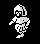
As above, facing -V: seen from the front, mirrored.
Graphics and their sprites: 24 (SPRITE24), 40 (SPRITE40).
His speed over the first five turns with walk held from standing: 4, 6, 8, 8, 8, as the code has it. The distance moved a turn once it has settled, along the one axis he faces: 8, as the code has it. The walking frame, one a turn: 0, 1, 2, 3, 4, 5, as the code has it. A turn took 62-68 ms here.
In the picture: 24+40m (60 ms); 25+41m (70 ms); 26+42m (60 ms); 27+43m (60 ms); 28+44m (70 ms); 29+45m (70 ms). 6 frames, 0.4 s in all.
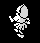
As above, facing -U: seen from behind.
Graphics and their sprites: 16 (SPRITE16), 32 (SPRITE32).
His speed over the first five turns with walk held from standing: 4, 6, 8, 8, 8, as the code has it. The distance moved a turn once it has settled, along the one axis he faces: 8, as the code has it. The walking frame, one a turn: 0, 1, 2, 3, 4, 5, as the code has it. A turn took 64-74 ms here.
In the picture: 16+32 (60 ms); 17+33 (70 ms); 18+34 (60 ms); 19+35 (70 ms); 20+36 (70 ms); 21+37 (70 ms). 6 frames, 0.4 s in all.
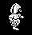
The turn keys turn him a quarter at a time (TURN_KNIGHT): left takes $40 off the facing, right adds it, and a turn sets a delay that lets the next come only every other turn while the key is held. He does not turn part way: the legs and top simply take the picture for the new facing, from the front or behind, mirrored or not (FACING_LOOKS). Here right held from facing +U until he faced +U again.
Graphics and their sprites: 16 (SPRITE16), 24 (SPRITE24).
Turns between one quarter turn and the next, the key held: 2, as the code has it. TURN_KNIGHT sets the turn delay to 1, and a delay counts down a turn before he can turn again. Each quarter turn changes the view between behind (16-21) and the front (24-29), the mirror bit, or both, by FACING_LOOKS.
In the picture: 24+47 +U (70 ms); 24+40m -V (130 ms); 16+32 -U (130 ms); 16+32m +V (130 ms); 24+40 +U (130 ms). 5 frames, 0.6 s in all.
While he is not turning, one turn in 32 the top starts a pose of its own for two to nine turns, 38 or 39 from behind, 46 or 47 from the front (UPDATE_TOP), and then goes back to matching the legs. Here 200 turns standing, facing +U, towards the viewer, with the frames that do not change merged.
Graphics and their sprites: 38 (SPRITE38), 39 (SPRITE39), 46 (SPRITE46), 47 (SPRITE47).
Measured over 200 turns: 9 poses, lasting 6, 4, 5, 3, 3, 3, 2, 4, 2 turns. One in 32 of the turns without one would start a pose, on average; the random number decides which turns.
In the picture: 24+47 (380 ms); 24+40 (2810 ms); 24+47 (260 ms); 24+40 (640 ms); 24+47 (320 ms); 24+40 (700 ms); 24+46 (190 ms); 24+40 (1090 ms); 24+46 (190 ms); 24+40 (2170 ms); 24+46 (190 ms); and so on. 17 frames, 12.8 s in all.
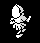
When the legs are stopped by a wall (MOVE_CLIPPED sets bit 0 of their flags) the top throws its arms out -- graphic 22 seen from behind, 30 from the front -- stays where it is, and the bump warbles (BUMP_SOUND) every turn walk is held. Here walk held from the middle of cell (22,23), facing +V, into the building of cell (22,24), and then let go.
Graphics and their sprites: 22 (SPRITE22), 30 (SPRITE30).
Measured: his V stopped at 240 within the cell, with his half-size of 16 that is the wall at the cell's edge; the top showed arms out for 7 turns, one for each turn walk was held against the wall, and went back to following the legs when it was let go.
In the picture: 16+32m V 128 (80 ms); 17+33m V 132 (80 ms); 18+34m V 138 (80 ms); 19+35m V 146 (80 ms); 20+36m V 154 (80 ms); 21+37m V 162 (80 ms); 16+32m V 170 (80 ms); 17+33m V 178 (90 ms); 18+34m V 186 (80 ms); 19+35m V 194 (80 ms); 20+36m V 202 (90 ms); and so on. 23 frames, 2.0 s in all.
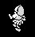
Standing in the open cell with one hit left, a monster of graphic 64 was put on him (the only thing staged): its update found it touching him and took the last hit (WANDERING_MONSTER), which ends his life -- both his records and the monster become the cloud, and his cell and facing go into the start records. When the cloud has gone, NEW_LIFE plays the new-life tune and copies him back in, with ARRIVING at 40; each turn the legs' update adds two (UPDATE_KNIGHT), and the drawing shows only the lines of his two records that are less than ARRIVING above the bottom of the play area (DRAW_SPRITE), so he rises out of the ground feet first. Nothing touches him until ARRIVING has reached 76 and become $70 (TOUCHING_KNIGHT).
Graphics and their sprites: 12 (SPRITE12), 13 (SPRITE13), 14 (SPRITE14), 15 (SPRITE15).
Turns his records were the cloud: 4, as the code has it. The turn his record emptied played the new-life tune and took 1039 ms; it ended with ARRIVING at 40, which then went 42, 44, 46 ... 74. Turns he was drawn cut short, ARRIVING counting from 42 to 74 by two: 17, as the code has it. His feet stand 38 lines above the bottom of the play area and the top of his head 73, so he rises into sight from ARRIVING 38 and is whole from 73; the count goes on to 76, when it becomes $70 and he can move.
In the picture: here 16+32 (130 ms); vanishing 12 (60 ms); vanishing 13 (60 ms); vanishing 14 (60 ms); vanishing 15 (1040 ms); appearing, ARRIVING 40 (70 ms); appearing, ARRIVING 42 (70 ms); appearing, ARRIVING 44 (70 ms); appearing, ARRIVING 46 (70 ms); appearing, ARRIVING 48 (70 ms); appearing, ARRIVING 50 (70 ms); and so on. 23 frames, 2.9 s in all.
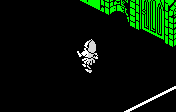
Nightshade's own: the knight stands still in the middle of the play area and the town is drawn round him every turn (DRAW_CELLS) -- the cells the drawing order picks round his, walls and all, back to front -- into the buffer, which is copied to the screen at the end of the turn (SHOW_PLAY_AREA). So the whole play area changes every turn, and a turn is as long as the drawing takes. Here the street along row 23 of the town, walked from its east end facing -U, from standing.
The distance he moved a turn along U once at speed: 8, as the code has it. He went through cells (29,23), (28,23), (27,23), (26,23): 256 units a cell, 32 turns. The picture is the play area, redrawn every turn round him; a turn took 59-85 ms.
In the picture: cell 29,23 U 128 (140 ms); cell 29,23 U 124 (70 ms); cell 29,23 U 118 (60 ms); cell 29,23 U 110 (70 ms); cell 29,23 U 102 (60 ms); cell 29,23 U 94 (70 ms); cell 29,23 U 86 (60 ms); cell 29,23 U 78 (70 ms); cell 29,23 U 70 (60 ms); cell 29,23 U 62 (70 ms); cell 29,23 U 54 (70 ms); and so on. 101 frames, 6.9 s in all.
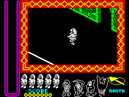
Z or SYMBOL SHIFT shows the town from the other side (TURN_TOWN): the key is latched while held and acts when it is let go, flipping VIEW, and every cell is then looked up and drawn turned round (TURN_CELL, TURN_POSITION), the knight seen from his other side, and the panel's heading changes between NORTH and SOUTH (PRINT_HEADING). Here, standing in cell (27,23) facing -U, Z pressed and let go twice. The whole screen.
Turns from the one with Z held to the one the view changed in: 1, 1, as the code has it. TURN_TOWN acts when the key is let go. The panel's heading changes with it (PRINT_HEADING).
In the picture: the usual way (190 ms); the usual way, Z held (60 ms); turned round (450 ms); turned round/turned round, Z held (130 ms); the usual way (520 ms). 5 frames, 1.4 s in all.
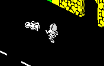
A bonus (PLACE_BONUS) lies near him almost all the time, graphic 2 or 3. Touched, graphic 2 (SPEED_BONUS) becomes the cloud and gives him a top speed of 18 for 255 turns: his speed goes on halfway to it each turn, to 16, and the footsteps come twice as often. Here a bonus of graphic 2 was put 72 units ahead of him in the open cell (staged), and walk held.
Graphics and their sprites: 2 (SPRITE2).
His speed from the turn he touched it: 8, 12, 14, 16, 16, as the code has it. SPEED_TIME was 255 and TOP_SPEED 18 after it; it counts down a turn at a time (UPDATE_KNIGHT), about 18 seconds at these turns.
In the picture: speed 0, bonus 2, hits 3 (140 ms); speed 4, bonus 2, hits 3 (80 ms); speed 6, bonus 2, hits 3 (70 ms); speed 8, bonus 2, hits 3 x4 (300 ms); speed 8, bonus 12, hits 3 (80 ms); speed 12, bonus 13, hits 3 (80 ms); speed 14, bonus 14, hits 3 (90 ms); speed 16, bonus 15, hits 3 (100 ms); speed 16, bonus 1, hits 3 x15 (1070 ms). 26 frames, 2.0 s in all.
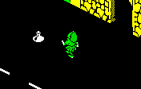
Graphic 3 (HITS_BONUS) gives him back all three hits of his life, and his colour goes back to white (KNIGHT_COLOURS, COLOUR_KNIGHT). Here with one hit left, green, a bonus of graphic 3 put 72 units ahead (staged), and walk held.
Graphics and their sprites: 3 (SPRITE3).
His hits before and after he touched it: (1, 3), as the code has it.
In the picture: speed 0, bonus 3, hits 1 (140 ms); speed 4, bonus 3, hits 1 (70 ms); speed 6, bonus 3, hits 1 (70 ms); speed 8, bonus 3, hits 1 x4 (290 ms); speed 8, bonus 12, hits 3 (90 ms); speed 8, bonus 13, hits 3 (80 ms); speed 8, bonus 14, hits 3 (90 ms); speed 8, bonus 15, hits 3 (90 ms); speed 8, bonus 1, hits 3 x5 (390 ms). 16 frames, 1.3 s in all.
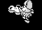
Whatever is taken up, destroyed or killed becomes graphic 12 and counts to 15, one a turn, and then its record is emptied, with a crackle if it was drawn (VANISHING, PUFF_SOUND). The dying villain's graphics 132-135 are drawn with the same pictures (VILLAIN_DYING). Cut from the run above: the bonus as he touches it.
Graphics and their sprites: 12 (SPRITE12), 13 (SPRITE13), 14 (SPRITE14), 15 (SPRITE15).
The bonus record, turn by turn: 2, 12, 13, 14, 15, 1, as the code has it. The record empties in the turn after 15; the 1 is the empty graphic these pages put in idle records, which keeps another bonus from coming at once.
In the picture: bonus record 2 (70 ms); bonus record 12 (80 ms); bonus record 13 (80 ms); bonus record 14 (90 ms); bonus record 15 (100 ms); bonus record 1 (100 ms). 6 frames, 0.5 s in all.
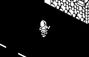
Fire throws the last thing taken up (KNIGHT_THROWS). An antibody goes into a free antibody record as a copy of his legs' record, graphic 80, 84, 88 or 92 by its kind, and flies at speed 12, moving twice a turn, its four frames stepping on, until a wall, where it becomes the cloud (ANTIBODY_FLIGHT). The antibodies share their pictures with the finds they were picked up as. Here he picked up four finds, one of each kind, by the game's own pick-up (the finds were put where he stood), in cell (22,23) facing the wall across it, and fire was pressed every eight turns.
Graphics and their sprites: 80 (SPRITE48), 84 (SPRITE52), 88 (SPRITE56), 92 (SPRITE60).
The antibodies' graphics in the order thrown: 92, 88, 84, 80, as the code has it. The distance an antibody moved a turn: 24, as the code has it. Each flew 4, 4, 4, 4 turns before the wall stopped it and it became the cloud; the two antibody records were used by turns, the second while the first was still busy with the last throw's cloud (KNIGHT_THROWS).
In the picture: antibodies 0, 0; carried 5,6,7,8 x2 (160 ms); antibodies 93, 0; carried 5,6,7,0 (80 ms); antibodies 94, 0; carried 5,6,7,0 (70 ms); antibodies 95, 0; carried 5,6,7,0 (70 ms); antibodies 92, 0; carried 5,6,7,0 (70 ms); antibodies 12, 0; carried 5,6,7,0 (70 ms); antibodies 13, 0; carried 5,6,7,0 (70 ms); antibodies 14, 0; carried 5,6,7,0 (70 ms); antibodies 15, 0; carried 5,6,7,0 (100 ms); antibodies 0, 89; carried 5,6,0,0 (70 ms); antibodies 0, 90; carried 5,6,0,0 (70 ms); and so on. 34 frames, 2.5 s in all.
Every fourth turn a free monster record gets a monster appearing (SPAWN_MONSTER) in his cell or one round it; it counts 128 to 131, one a turn, with a rising note (APPEAR_SOUND), and then becomes a monster of 64-79 or 112-127, by the random number, of the kind of the villain nearest it (APPEARING_UPDATE). Its pictures are the puffs of the vanishing cloud, largest first. Here the puff alone, its four turns: the game was left to run with him standing still until one appeared where it was drawn -- while waiting, the monster records were emptied every turn, as walking away from monsters empties them, so that new ones kept coming.
Graphics and their sprites: 128 (SPRITE15), 129 (SPRITE14), 130 (SPRITE13), 131 (SPRITE12).
The record's graphics from its first turn: 128, 129, 130, 131, as the code has it. Then it became 68: a monster of 64-79, of the kind of the villain nearest it (APPEARING_UPDATE).
In the picture: 128 (70 ms); 129 (70 ms); 130 (60 ms); 131 (60 ms). 4 frames, 0.3 s in all.
| a blob | a swarm | a dome | a slug |
|---|---|---|---|
65, 66, 67, 64; 16 turns of 71-82 ms | 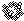 69, 70, 71, 68; 16 turns of 71-82 ms | 73, 74, 75, 72; 16 turns of 71-82 ms | 77, 78, 79, 76; 16 turns of 75-82 ms |
| 64 (SPRITE64), 65 (SPRITE65), 66 (SPRITE66), 67 (SPRITE65) | 68 (SPRITE68), 69 (SPRITE69), 70 (SPRITE70), 71 (SPRITE69) | 72 (SPRITE72), 73 (SPRITE73), 74 (SPRITE74), 75 (SPRITE73) | 76 (SPRITE76), 77 (SPRITE77), 78 (SPRITE78), 79 (SPRITE77) |
Four kinds of four frames (WANDERING_MONSTER), three pictures each: the second frame's picture is also the fourth's. They wander: every so often a new random step of up to 14 units each way (WANDER_STEP), the frame stepped on every turn (NEXT_FRAME_MOD4); touching him they vanish and take a hit, and more than two cells off they are gone. Any antibody destroys them. Which way one faces makes no difference to its picture: it is drawn mirrored only while the town is turned round (WANDERING_MONSTER), so a GIF for each kind. Here one of each kind was staged round him in the open cell from the monster template (MONSTER_RECORD), him standing still, and left to wander for 16 turns; that was run four times, each kind starting in each of the four places in turn. Each GIF is the longest stretch of turns in which a record held its kind, cut to whole rounds of four frames.
Measured over the 4 runs: steps of up to 12 units a turn along U and V, both at once (WANDER_STEP gives each up to 14), and the frame stepped on every turn (NEXT_FRAME_MOD4). Turns drawn mirrored, the town the usual way round: 0, as the code has it. A turn took 71-87 ms.
| Kind | Facing +V | Facing +U | Facing -V | Facing -U |
|---|---|---|---|---|
| the horned monster with its arms up 112 (SPRITE112), 113 (SPRITE113), 114 (SPRITE114), 115 (SPRITE115) | 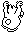 115, 114; 16 turns of 78-91 ms | 113, 112, mirrored; 16 turns of 78-91 ms | 113, 112; 16 turns of 78-91 ms | 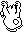 115, 114, mirrored; 16 turns of 78-91 ms |
| the spiky round monster 116 (SPRITE116), 117 (SPRITE117), 118 (SPRITE118), 119 (SPRITE119) | 119, 118; 16 turns of 78-91 ms | 117, 116, mirrored; 16 turns of 78-91 ms | 117, 116; 16 turns of 78-91 ms | 119, 118, mirrored; 16 turns of 78-91 ms |
| the horned head 120 (SPRITE120), 121 (SPRITE121), 122 (SPRITE122), 123 (SPRITE123) | 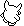 123, 122; 16 turns of 78-91 ms | 121, 120, mirrored; 16 turns of 78-91 ms | 121, 120; 16 turns of 78-91 ms | 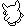 123, 122, mirrored; 16 turns of 78-91 ms |
| the crested monster 124 (SPRITE124), 125 (SPRITE125), 126 (SPRITE126), 127 (SPRITE127) | 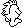 127, 126; 16 turns of 78-91 ms | 125, 124, mirrored; 16 turns of 78-91 ms | 125, 124; 16 turns of 78-91 ms | 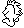 127, 126, mirrored; 16 turns of 78-91 ms |
The other monsters (MONSTER112_UPDATE) walk: at speed 6 the way they face, turning at walls and now and then (STEER), those born in the first half of every 256 turns towards the knight. Each kind has a picture from behind and one from the front, two walking frames each, and the facing picks the picture and the mirroring (FACING_PICTURE): facing +V or -U, away from the viewer, it is seen from behind (bit 1 of the graphic set), facing +U or -V from the front, and facing along U it is drawn mirrored; bit 0, the frame, flips every turn. With the town turned round it shows the other picture, its other side. What an antibody does to one depends on the kinds of both (below). Here one of each kind was staged round him in the open cell from the monster template (MONSTER_RECORD), each facing a different way, him standing still, and left to walk for 16 turns; that was run four times, the places and facings turned one along each time, so that each kind started once facing each way. Each GIF is the longest stretch of turns in which a kind walked the way its column says, cut to whole pairs of frames.
The distance a monster of 112-127 moved a turn, along one axis: 6, as the code has it. The picture (bit 1 of the graphic) and the mirroring by facing, over the 256 turns recorded: +V picture 1, +U picture 0 mirrored, -V picture 0, -U picture 1 mirrored, as the code has it. Turns, of the 240 that followed a turn of the same thing, in which the walking frame (bit 0) did not change: 0, as the code has it. A turn took 78-91 ms.
Every 256 turns a monster record becomes the creature, in his own cell (SPAWN_CREATURE). It makes for him two units a turn along U and along V (STEER_AT_KNIGHT), blipping, its four frames stepping on one a turn (NEXT_FRAME_MOD4) -- three pictures, 139 drawn as 137; led into a wall it bursts for 1000 points, and touching him it bursts and takes a hit (CREATURE_UPDATE), his colour going from white to yellow. Its own code never mirrors it: it keeps the flags of the monster record it is put in. Here the creature alone, from the turn it was put 80 units off along each axis in his cell, where the game would put it (staged), him standing still, until it reached him and burst: whole rounds of its four frames.
Graphics and their sprites: 136 (SPRITE136), 137 (SPRITE137), 138 (SPRITE138), 139 (SPRITE137).
Turns in which its frame did not step on by one (NEXT_FRAME_MOD4): 0, as the code has it. Its step each turn in U and V: (-2, -2), as the code has it. The turn it touched him in, from 80 units off each way: touching needs less than 24 between them along each axis (its half-size of 16 and half his, TOUCHING_KNIGHT): 29, as the code has it. His hits before and after: (3, 2), as the code has it.
In the picture: 137 (80 ms); 138 (70 ms); 139 (70 ms); 136 (70 ms); 137 (70 ms); 138 (80 ms); 139 (70 ms); 136 (70 ms); 137 (70 ms); 138 (80 ms); 139 (80 ms); and so on. 28 frames, 2.0 s in all.
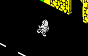
The monster's kind (bits 2-3 of 112-127) and the antibody's (bits 2-3 of 80-95), added, pick one of four outcomes from MONSTER_HIT_TABLE, so each kind of monster is destroyed by one kind of antibody. Monster 112 and antibody 80: 0, destroyed, 2500 points (HIT_DESTROYS). In each of these the monster was staged 96 units ahead of him, facing him, in the open cell, after one antibody of the kind was picked up and thrown.
Graphics and their sprites: 112 (SPRITE112), 80 (SPRITE48).
Points for outcome 0 of MONSTER_HIT_TABLE (monster 112, antibody 80): 2500, as the code has it. The monster's graphic after: 12, as the code has it.
In the picture: antibody none; monsters none; score 00000000 (90 ms); antibody 81; monsters none; score 00000000 (80 ms); antibody 82; monsters 115; score 00000000 (80 ms); antibody 12; monsters 12; score 00002500 (70 ms); antibody 13; monsters 13; score 00002500 (70 ms); antibody 14; monsters 14; score 00002500 (70 ms); antibody 15; monsters 15; score 00002500 (80 ms); antibody none; monsters none; score 00002500 x2 (450 ms). 9 frames, 1.0 s in all.
Monster 112 and antibody 84: 1, changed into the next kind, 116, which another antibody would destroy; 2000 points (HIT_CHANGES).
Graphics and their sprites: 112 (SPRITE112), 84 (SPRITE52), 116 (SPRITE116).
Points for outcome 1 of MONSTER_HIT_TABLE (monster 112, antibody 84): 2000, as the code has it. The monster's graphic after: 116, as the code has it.
In the picture: antibody none; monsters none; score 00000000 (90 ms); antibody 85; monsters none; score 00000000 (80 ms); antibody 86; monsters 115; score 00000000 (80 ms); antibody 12; monsters 118; score 00002000 (70 ms); antibody 13; monsters 119; score 00002000 (70 ms); antibody 14; monsters 118; score 00002000 (70 ms); antibody 15; monsters 119; score 00002000 (80 ms); antibody none; monsters 118; score 00002000 (70 ms); antibody none; monsters 119; score 00002000 (70 ms); antibody none; monsters 118; score 00002000 (70 ms); antibody none; monsters 119; score 00002000 (70 ms); and so on. 14 frames, 1.0 s in all.
Monster 112 and antibody 88: 2, split, 1500 points (HIT_SPLITS). The copy goes into the first monster record whatever is there -- the loop that should find an empty record looks at the wrong one (see HIT_SPLITS) -- and the two are turned a quarter each way.
Graphics and their sprites: 112 (SPRITE112), 88 (SPRITE56).
Points for outcome 2 of MONSTER_HIT_TABLE (monster 112, antibody 88): 1500, as the code has it. After the strike the first monster record held 114 and the second 114: the copy, and the original, each turned a quarter.
In the picture: antibody none; monsters none; score 00000000 (90 ms); antibody 89; monsters none; score 00000000 (80 ms); antibody 90; monsters 115; score 00000000 (90 ms); antibody 12; monsters 114 114; score 00001500 (90 ms); antibody 13; monsters 115 113; score 00001500 (80 ms); antibody 14; monsters 114 112; score 00001500 (80 ms); antibody 15; monsters 115 113; score 00001500 (80 ms); antibody none; monsters 114 112; score 00001500 (70 ms); antibody none; monsters 115 113; score 00001500 (70 ms); antibody none; monsters 114 112; score 00001500 (70 ms); antibody none; monsters 115 113; score 00001500 (70 ms); and so on. 14 frames, 1.1 s in all.
Monster 112 and antibody 92: 3, turned into a monster of 64 or 68 (HIT_DEMOTES), 1000 points; any antibody destroys those.
Graphics and their sprites: 112 (SPRITE112), 92 (SPRITE60), 64 (SPRITE64).
Points for outcome 3 of MONSTER_HIT_TABLE (monster 112, antibody 92): 1000, as the code has it. The monster's graphic after: 64, as the code has it.
In the picture: antibody none; monsters none; score 00000000 (90 ms); antibody 93; monsters none; score 00000000 (80 ms); antibody 94; monsters 115; score 00000000 (80 ms); antibody 12; monsters 64; score 00001000 (70 ms); antibody 13; monsters 65; score 00001000 (70 ms); antibody 14; monsters 66; score 00001000 (70 ms); antibody 15; monsters 67; score 00001000 (80 ms); antibody none; monsters 64; score 00001000 (70 ms); antibody none; monsters 65; score 00001000 (70 ms); antibody none; monsters 66; score 00001000 (70 ms); antibody none; monsters 67; score 00001000 (70 ms); and so on. 14 frames, 1.0 s in all.
Any antibody destroys a monster of 64-79: both become the cloud, and 5 goes on the score, 500 as printed (WANDERING_MONSTER). Here the monster was put 60 units ahead, where the antibody would be a turn after the throw, since these wander rather than walk at him.
Graphics and their sprites: 64 (SPRITE64), 80 (SPRITE48).
Points scored: 500, as the code has it. (WANDERING_MONSTER adds 5 at the score's hundreds; every score ends 00). The antibody and the monster both became graphic 12, the cloud, in the same turn.
In the picture: antibody none; monsters none; score 00000000 (90 ms); antibody 81; monsters none; score 00000000 (80 ms); antibody 12; monsters 12; score 00000500 (80 ms); antibody 13; monsters 13; score 00000500 (70 ms); antibody 14; monsters 14; score 00000500 (70 ms); antibody 15; monsters 15; score 00000500 (90 ms); antibody none; monsters none; score 00000500 (450 ms). 7 frames, 0.9 s in all.
| Kind | Facing +V | Facing +U | Facing -V | Facing -U |
|---|---|---|---|---|
| the skeleton 108 (SPRITE108), 109 (SPRITE109), 110 (SPRITE110), 111 (SPRITE111) | 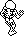 111, 110; 28 turns of 87-145 ms | 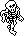 109, 108, mirrored; 30 turns of 92-145 ms | 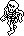 109, 108; 28 turns of 84-144 ms | 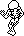 111, 110, mirrored; 30 turns of 93-145 ms |
| the hooded figure with the scythe 104 (SPRITE104), 105 (SPRITE104), 106 (SPRITE106), 107 (SPRITE106) | 107, 106: one picture, 28 turns | 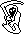 105, 104, mirrored: one picture, 30 turns | 105, 104: one picture, 28 turns | 107, 106, mirrored: one picture, 30 turns |
| the hooded figure 100 (SPRITE100), 101 (SPRITE100), 102 (SPRITE102), 103 (SPRITE102) | 103, 102: one picture, 28 turns | 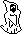 101, 100, mirrored: one picture, 30 turns | 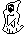 101, 100: one picture, 28 turns | 103, 102, mirrored: one picture, 30 turns |
| the ghost 96 (SPRITE96), 97 (SPRITE97), 98 (SPRITE96), 99 (SPRITE97) | 99, 98; 28 turns of 92-145 ms | 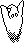 97, 96, mirrored; 30 turns of 93-145 ms | as +V | as +U |
A villain walks at speed 4 (VILLAIN_WANDER), turning at walls and now and then at random, humming while it is on the screen; it kills him at a touch, whatever his hits. Its picture comes from its facing as a monster's of 112-127 does (FACING_PICTURE): from behind facing +V or -U, from the front facing +U or -V, mirrored along U, and bit 0 of the graphic, the walking frame, toggled every turn. The skeleton has a picture for each; the hooded figures one frame for each side, so each facing is a still; the ghost one picture from either side but two frames, so facing -V it looks as it does facing +V, and -U as +U. Here the four were put 80 units from him along U and V, facing away (staged), him standing still, and left to walk for 30 turns; that was run four times, each villain starting in each place in turn. Each GIF is the longest stretch of turns in which a villain walked the way its column says, cut to whole pairs of frames.
The distance a villain moved a turn: 4, as the code has it. The picture (bit 1 of the graphic) and the mirroring by facing, over the 480 turns recorded: +V picture 1, +U picture 0 mirrored, -V picture 0, -U picture 1 mirrored, as the code has it. Turns, of the 464 that followed a turn of the same thing, in which the walking frame (bit 0) did not change: 0, as the code has it. Over 4 runs of 30, 30, 30, 30 turns, him standing still; a turn took 84-145 ms. The hum is played for each villain drawn (BLIP_BY_TURN).
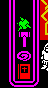
The carried things are coloured every turn (COLOUR_CARRIED): each in its own colour, but an object whose villain is less than five cells off in column and row flashes through the four antibodies' colours, a new one each turn -- the only sign of a villain out of sight. Here he picked up the objects for villains 3 and 0 and two antibodies; villain 0 was put three cells along U from him, kept standing, and the others far off (staged). The panel, bottom four places.
Measured, the third place's ink turn by turn: magenta, green, cyan, yellow, magenta, green, cyan, yellow ...; the first place's: red throughout. Turns before the third place's colour came round again: 4, as the code has it.
In the picture: villain 0 (3, 0) cells off; places red, magenta, magenta, green (70 ms); villain 0 (3, 0) cells off; places red, magenta, green, green (70 ms); villain 0 (3, 0) cells off; places red, magenta, cyan, green (70 ms); villain 0 (3, 0) cells off; places red, magenta, yellow, green (60 ms); villain 0 (3, 0) cells off; places red, magenta, magenta, green (60 ms); villain 0 (3, 0) cells off; places red, magenta, green, green (60 ms); villain 0 (3, 0) cells off; places red, magenta, cyan, green (60 ms); villain 0 (3, 0) cells off; places red, magenta, yellow, green (60 ms); villain 0 (3, 0) cells off; places red, magenta, magenta, green (60 ms); villain 0 (3, 0) cells off; places red, magenta, green, green (60 ms); villain 0 (3, 0) cells off; places red, magenta, cyan, green (60 ms); and so on. 16 frames, 1.0 s in all.
Only the object in the same place in its records destroys a villain (OBJECT_STRIKE). Thrown, an object flies at speed 12 twice a turn (OBJECT_FLIGHT); striking its villain it becomes the cloud, scores 250000, sends out four sparkles from the villain's place (VILLAIN_SPARKLES), one each way, which fly on until they meet a wall (SPARKLE_FLY), and redraws the panel's villains, the dead one now in the object's colour (DRAW_VILLAINS). The villain dies for six or seven turns (VILLAIN_DYING: a new frame only on odd turns), the play area's paper a new colour each turn. Here the object for villain 0 (the one drawn with graphic 108) was picked up and thrown in the open cell, facing -U, and the villain put 96 units ahead of him (staged). The whole screen.
Graphics and their sprites: 108 (SPRITE108), 11 (SPRITE7), 132 (SPRITE12), 140 (SPRITE48).
Turns the villain was dying (132-135), struck on an odd turn: 6, as the code has it. Its record was empty in the turn after. The play area's paper in those turns, by the turn counter's low bits: white, black, blue, red, magenta, green, as the code has it. A sparkle's move a turn: 12, as the code has it. The score went from 00000000 to 00250000.
In the picture: object 0, villain 108, sparkles none, paper black (90 ms); object 11, villain 109, sparkles none, paper black (80 ms); object 11, villain 111, sparkles none, paper black (100 ms); object 12, villain 133, sparkles 140,140,140,140, paper white (80 ms); object 13, villain 133, sparkles 141,141,141,141, paper black (80 ms); object 14, villain 134, sparkles 142,142,142,142, paper blue (80 ms); object 15, villain 134, sparkles 143,143,143,143, paper red (90 ms); object 0, villain 135, sparkles 140,140,140,140, paper magenta (80 ms); object 0, villain 135, sparkles 141,141,141,141, paper green (70 ms); object 0, villain 0, sparkles 142,142,142,142, paper cyan (70 ms); object 0, villain 0, sparkles 143,143,143,143, paper black (70 ms); and so on. 29 frames, 2.2 s in all.
A villain struck by its object dies for six or seven turns (VILLAIN_DYING): its graphic steps from 132 to 135 on odd turns only, so each picture stays for two turns, while the play area's paper flashes (above). The pictures are the vanishing cloud's, smallest first (VANISHING), drawn with the flags the villain had. Here the villain of graphic 108 alone, from the run above, from the turn it was struck until its record emptied.
Graphics and their sprites: 132 (SPRITE12), 133 (SPRITE13), 134 (SPRITE14), 135 (SPRITE15).
Its graphics turn by turn, struck on an odd turn: 133, 133, 134, 134, 135, 135, as the code has it. Drawn unmirrored, with the flags it had.
In the picture: 133 (170 ms); 134 (170 ms); 135 (150 ms). 3 frames, 0.5 s in all.
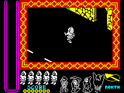
With the four villains gone and their sparkles off the screen, CHECK_QUEST_DONE ends the game: GAME_OVER shows the percentage and the score under the game-over tune, then empties every record, fills ten from ENDING_RECORDS and lets the main loop run them: five pictures of the back of a pit and one of its front, updated last so it is drawn over what sinks, and the four villains, each waiting unseen while the record before it holds one on its way (ENDING_VILLAIN) -- so they come record by record, the villains of 96, 100, 104 and 108 -- carried across to the pit at up to four a turn, then sunk four lines a turn, in their own colours, with a note that rises. When the last is gone the end tune plays and the menu comes back (ENDING_PIT_FRONT). Staged: the four villain records emptied at the start of a turn, as four destroyed villains leave them; the rest is the game's. The whole screen.
Graphics and their sprites: 144 (SPRITE96), 145 (SPRITE97), 146 (SPRITE100), 147 (SPRITE100), 148 (SPRITE104), 149 (SPRITE104), 150 (SPRITE108), 151 (SPRITE109), 152 (SPRITE152), 153 (SPRITE153), 154 (SPRITE154), 155 (SPRITE155), 156 (SPRITE156), 157 (SPRITE157).
Record 5 (graphic 144) waited 0 turns; from x 16 to the pit at x 100, turns crossing: 21, as the code has it. Turns drawn sinking, 4 lines a turn from y 128 while y is 48 or more: 20, as the code has it. Record 6 (graphic 146) waited 41 turns; from x 208 to the pit at x 100, turns crossing: 27, as the code has it. Turns drawn sinking, 4 lines a turn from y 128 while y is 48 or more: 20, as the code has it. Record 7 (graphic 148) waited 88 turns; from x 16 to the pit at x 100, turns crossing: 21, as the code has it. Turns drawn sinking, 4 lines a turn from y 128 while y is 48 or more: 20, as the code has it. Record 8 (graphic 150) waited 129 turns; from x 208 to the pit at x 100, turns crossing: 27, as the code has it. Turns drawn sinking, 4 lines a turn from y 128 while y is 48 or more: 20, as the code has it. 176 turns of the ending in all, 24-43 ms each.
In the picture: the last turn of play (20 ms); game over x11 (4150 ms); record 5: villain 144 at x 16, y 128 (40 ms); record 5: villain 145 at x 20, y 128 (50 ms); record 5: villain 144 at x 24, y 128 (50 ms); record 5: villain 145 at x 28, y 128 (50 ms); record 5: villain 144 at x 32, y 128 (50 ms); record 5: villain 145 at x 36, y 128 (50 ms); record 5: villain 144 at x 40, y 128 (50 ms); record 5: villain 145 at x 44, y 128 (50 ms); record 5: villain 144 at x 48, y 128 (50 ms); and so on. 187 frames, 18.8 s in all.